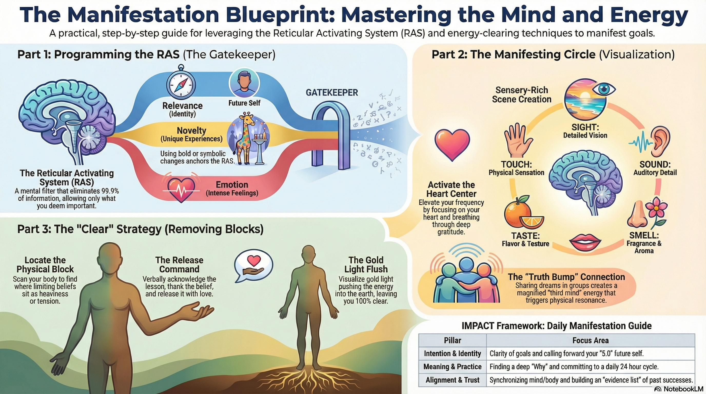

Instructor: Rola Diab
Downloads & Resources

1. RAS Triggers: Relevance (identity), Novelty (unusual), Emotion. Your RAS filters what's important based on these three.
2. Manifesting Circle: Groups of 4, eyes closed, one person describes their scene with vivid detail and emotion. Others visualize it. Third mind is created.
3. CLEAR Technique: Locate limiting belief in body → Speak to it → Gold light flushes it to center of earth. Takes minutes.
4. IMPACT Framework: Intention, Meaning, Practice, Alignment, Communication, Trust.
When 2+ people come together, a third mind is created — magnifying the energy exponentially
Eyes Closed
RAS filters distractions
One Scene
Like a photo you can move in
Big Emotion
Childlike, excited tone
Vivid Details
All senses, adjectives
Goal: Make everyone SEE and FEEL the scene as if they're there with you
The RAS is a portion of your brain that eliminates 99.9999% of all information and only allows in what you say is important. Understanding how to trigger your RAS is essential for manifesting.
Your identity, goals, or role
Example: If you're a mother in a crowded space and you hear your child scream among a thousand people, somehow you can hear YOUR child. That's your RAS filtering out all the noise because your identity as a mother makes your child relevant.
Unusual or different experiences
Example: Rola went to a party in Dubai with a giant giraffe and monkey at the entrance. She never forgot it because it was so novel. If you can add a novelty aspect to what you're manifesting, your RAS will filter for it.
Whatever emotion you feed it
Key insight: Whether it's stress (negative) or excitement (positive), whatever emotion you're feeding is going to repeat. This is why experiences can loop over and over—your RAS has attached emotion to it.
If something keeps looping in your mind, that doesn't necessarily mean it's the answer to your next step—it's just your RAS at work. Recognize: "This is not necessarily important. My RAS is looping. I just need to get clear about what I want."
The Manifesting Circle uses the combined energy of a group to amplify manifestations. When two or more people come together, a third mind is created—magnifying the energy between them.
Focus on your heart center. The heart is the gateway to manifesting. Send your life force to your heart, think of something you're grateful for, and expand that feeling throughout your body and into the room.
Decide who goes first. Keep eyes closed throughout. Between each person, take a moment to refocus on your heart and re-elevate your energy.
Stand up if you're sharing. Use your body. Bring excitement into your voice. The goal: make everyone SEE and FEEL the scene as if they're there.
When you get goosebumps listening to someone, those are "truth bumps"—confirmation that the energy has been activated.
"We're projecting our energy and vision onto a hologram—which is this world—and it changes based on our energy and intention."— Rola Diab
If we live in a holographic universe, then whatever disruptors we identify can be changed based on our belief and conviction. The second we say "it's not gonna happen," we give away our power.
Student question: "What if my husband doesn't want to move, but I want to manifest a new home?"
Rola's answer: That's your future excuse. Don't make it an excuse. Somehow, energetically, you're going to transform your husband to wanting to move based on your belief system.
You have to create an unbelievable level of belief and conviction in what you want. That's how you end up getting what you want.
If we're so attached to something being one way, it creates the lack of having and takes us out of our ability to manifest. To release attachment:
The world constantly seeks balance (homeostasis). If you're upset, angry, pushing something away, or too attached—the only thing imbalanced is your perspective.
To balance: Identify the benefits AND drawbacks equally. When both sides are balanced, you move to the center—a state of love and gratitude.
We often make things "bad" and push them away. But if we can see both sides equally, we release the charge.
A powerful process for removing limiting beliefs in minutes. Your subconscious is sitting in your body—if you can locate it, you can release it.
"If you're noticing it, it means it's ready to go. If you feel it, it's like: 'Pay attention, clear me.'"— Rola Diab
What's interfering with your manifestation? What block keeps coming up?
Focus on your heart, think of gratitude, expand that feeling. When you're elevated, heaviness in your body becomes easier to locate.
Scan your body. Where does it feel heavy or tight? Often it's in the stomach, heart, arms, or head. It might be in multiple places. Notice what it looks like—color, shape, texture.
Say aloud: "I acknowledge you. I thank you for the lessons. And I release you now with love and gratitude."
Visualize gold light flushing in from 600 feet above your head, into your body. It circles around the energy, unlocks it, and pushes it down to the center of the earth—leaving you 100% completely.
Continue the gold light flush to raise the frequency where the energy once was—back to love and gratitude. Give thanks for the release.
A friend of Rola's started clearing limiting beliefs all day, every day. She wanted to do well in her career as a real estate agent and also find her future husband.
In 30 days: She closed a $44 million property AND found her husband—just by clearing all the limiting beliefs that were in the way.
Rola's 7-step framework for manifesting—also used in her corporate leadership programs for companies like KPMG and Bloomberg.
Get super clear. Make sure it's YOUR intention, not what others want for you. Aligned with your higher self. No conflict = no resistance.
Understand the deeper driver. Make the meaning greater than the moment. When you need to change behavior, a strong meaning helps you choose differently.
Daily commitment. We run 24-hour cycles. If you drop the ball in a cycle, you reduce energy toward your goal. Consistency builds conviction.
Mind-body alignment. Use the CLEAR technique to remove blocks. This is what Rola teaches in corporate—and they accept it!
How you speak about your manifestation matters. If you say "I try to do this..." or "I hope..." you've already pulled back your power. Be affirmative. Create unshakeable conviction in your words.
Build trust in yourself with an Evidence List—all your past wins and manifestations. When you have a shaky moment, go back to the list. We have selective memory; the list reminds us how good we are.
Throughout the day, ask yourself: "What would [Your Name] 5.0 do right now?" Call forward the version of you who already has the result. How would she think? What are her challenges? Just by calling in that energy, you activate it in your field and start manifesting more of it.
"I acknowledge you. I thank you for the lessons. And I release you now with love and gratitude."